S02
AZwei obere Teile: Formstand A
21 CAD-Objekte · mit 3 Zusatzgeometrien
Bauteile, Mengen & Maße →S03 hat zwei anders geformte obere Bauteile und enthält die drei zusätzlichen Zubehör-CAD-Geometrien von S02/S04 nicht. Am übrigen verglichenen Kern wurde kein Unterschied festgestellt.
S02 ↔ S03: 2 Formunterschiede + 3 zusätzliche CAD-Geometrien bei S02.
S02 ↔ S04: Kein Unterschied in den geprüften Geometriemerkmalen; nur anderer Modellstandort.
21 CAD-Objekte · mit 3 Zusatzgeometrien
Bauteile, Mengen & Maße →18 CAD-Objekte · ohne die 3 Zusatzgeometrien
Bauteile, Mengen & Maße →21 CAD-Objekte · mit 3 Zusatzgeometrien
Bauteile, Mengen & Maße →Gleiche Blickrichtung, Projektion, Maßstab und Bildbeschnitt. Farben sind Vergleichsmarkierungen, keine Werkstoffe. Vollständige Übereinstimmung aller Trimkurven und technische Austauschbarkeit sind nicht bewiesen.
Die violette Markierung zeigt dieselbe räumliche Zone. In S02 und S04 liegen dort drei originale CAD-Geometrien, in S03 keine. Drei CAD-Geometrien sind nicht automatisch drei vollständige Verbinder.
Gezielter Ausschnitt, kein vollständiges Modulbild. Die Bildnummern führen zu den beiden oberen Bauteilen in der Stückliste. Die übrigen Originalobjekte bleiben zur räumlichen Orientierung im Ausschnitt erhalten.
Nicht nur das Zubehör fehlt: Die nativen Kanten und Eckpunkte der beiden länglichen Teile unterscheiden sich. Die folgenden Endprojektionen vergrößern diese Unterschiede ohne verdeckende Modulplatten.
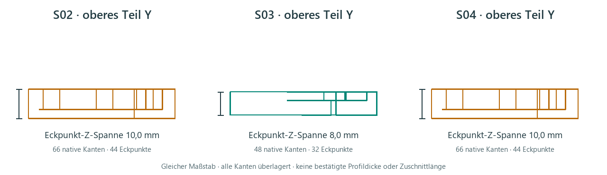
10 / 8 mm bezeichnen ausschließlich die vertikale Spanne der nativen Brep-Eckpunkte in diesen Teilen – keine bestätigte Profildicke, Roh- oder Zuschnittlänge. Alle Kanten sind überlagert, ohne verdeckte Linien zu entfernen. Die bisherige Einstufung der Teile als UNKNOWN bleibt bestehen.
| Vergleich | S02 | S03 | S04 | Befund |
|---|---|---|---|---|
| ① Oberes Teil Y | S02-P008 | S03-P014 | S04-P006 | Formunterschied belegt; Funktion und Fertigungsmaße UNKNOWN |
| ② Oberes Teil X | S02-P020 | S03-P010 | S04-P001 | Formunterschied belegt; Funktion und Fertigungsmaße UNKNOWN |
Die Paarung folgt eindeutiger Lage, Längsrichtung und Höhenzone. Sie beweist keine historische Teileidentität. Alle Original-GUIDs stehen in den Bauteillisten und im Geometrienachweis.
Die fünf geraden Rundstäbe, fünf bearbeiteten Stäbe, vier Rechteckplatten und zwei weiteren unteren Bauteile: 16 zugeordnete Objekte ohne Unterschied in den geprüften nativen Darstellungen. Zwischen S02 und S04 gilt das für alle 21 zugeordneten Objekte.
Geprüft: Position nach gemeinsamer Rahmendatum-Ausrichtung, native Kontrollpunkte/Knoten, Kanten, Flächen, Topologie sowie Kanten-/Flächen-Stichproben. Keine Behauptung vollständiger Trimkurven-Identität, Kollisionsfreiheit, Verbindungseignung oder Produktionsabsicht.
Die Nummern ① / ② markieren die beiden Vergleichsteile. Bestätigte Maße, Näherungen und UNKNOWN bleiben getrennt. Die fünf Studien und alle 153 Einzelobjekte sind erhalten; alternative Studien werden nicht zu einer Produktionsmenge addiert.
Nummern sind die unveränderten V0.1-Stücklistenzeilen. Jede Menge ist über die Original-GUIDs und Einzelbilder prüfbar. Eine Zeile mit gleichen Anzeigemaßen ist keine Fertigungs-Gleichteilfreigabe.
| Zeile | CAD-Stk. | Teil | Abmessungen aus V0 | Zugehörige Originale |
|---|---|---|---|---|
| 01 | 2 | Gerader RundstabDefault · Werkstoff offen | Ø 30,0 × 1.302,02 mmbestätigte Maße | 2 Originalbilder ansehenS02-P002Ø 30,0 × 1.302,02 mm 201d9dc1-d68a-42b5-be96-ecc9ab58ddebInstanzpfad [] · NATIVE_PRIMITIVE_CONFIRMEDS02-P015Ø 30,0 × 1.302,02 mm 8c6aace8-3d1f-48d7-9959-ef4064eaa48bInstanzpfad [] · NATIVE_PRIMITIVE_CONFIRMED |
| 02 | 3 | Gerader RundstabDefault · Werkstoff offen | Ø 40,0 × 2.000,00 mmbestätigte Maße | 3 Originalbilder ansehenS02-P004Ø 40,0 × 2.000,00 mm 2c15516e-85cf-4585-adfa-cbadac92645cInstanzpfad [] · NATIVE_PRIMITIVE_CONFIRMEDS02-P011Ø 40,0 × 2.000,00 mm 62b153ea-21ce-40a7-8d5c-a095b5669f94Instanzpfad [] · NATIVE_PRIMITIVE_CONFIRMEDS02-P019Ø 40,0 × 2.000,00 mm ea8b2a9a-7648-4a64-b24c-ce5165a29c6aInstanzpfad [] · NATIVE_PRIMITIVE_CONFIRMED |
| 03 | 1 | Bearbeiteter StabDefault · Werkstoff offen | Nenn-Ø ≈ 30,0 · L ≈ 1.302,02 mmNäherung, keine Zuschnittlänge | 1 Originalbild ansehenS02-P012Nenn-Ø ≈ 30,0 · L ≈ 1.302,02 mm 77536d7c-3285-4ed8-9daf-bd864131f202Instanzpfad [] · USER_ACCEPTED_BBOX_PROXY |
| 04 | 3 | Bearbeiteter StabDefault · Werkstoff offen | Nenn-Ø ≈ 30,0 · L ≈ 602,02 mmNäherung, keine Zuschnittlänge | 3 Originalbilder ansehenS02-P005Nenn-Ø ≈ 30,0 · L ≈ 602,02 mm 304ca5b2-295b-477e-8b09-c019d802982aInstanzpfad [] · USER_ACCEPTED_BBOX_PROXY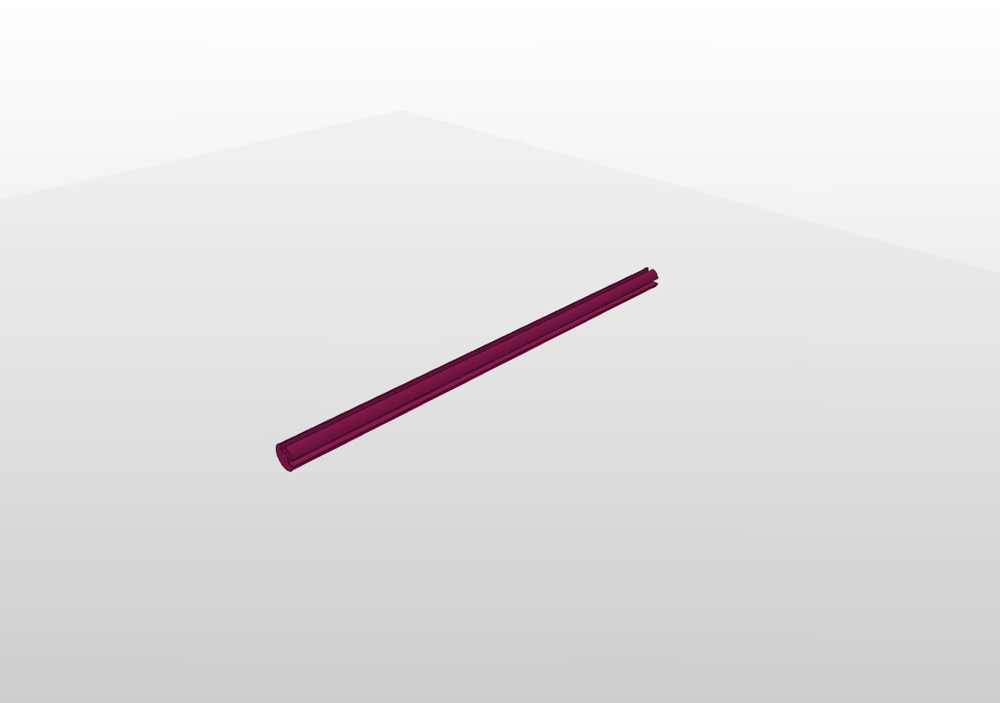 S02-P009Nenn-Ø ≈ 30,0 · L ≈ 602,02 mm 59787ede-5ca9-4a04-854e-f15e639a0c11Instanzpfad [] · USER_ACCEPTED_BBOX_PROXYS02-P013Nenn-Ø ≈ 30,0 · L ≈ 602,02 mm 7c982821-9c48-466d-983b-0226aa386ac2Instanzpfad [] · USER_ACCEPTED_BBOX_PROXY |
| 05 | 1 | Bearbeiteter StabDefault · Werkstoff offen | Nenn-Ø ≈ 40,0 · L ≈ 2.000,00 mmNäherung, keine Zuschnittlänge | 1 Originalbild ansehenS02-P021Nenn-Ø ≈ 40,0 · L ≈ 2.000,00 mm f40e6b73-b57a-43e3-9caa-7486642e796aInstanzpfad [] · USER_ACCEPTED_BBOX_PROXY |
| 06 | 1 | RechteckplatteDefault · Werkstoff offen | 1.278,02 × 571,00 × 8,00 mmbestätigte Maße | 1 Originalbild ansehenS02-P0141.278,02 × 571,00 × 8,00 mm 820d313b-8997-44a8-a1fd-71d585656d84Instanzpfad [] · NATIVE_PRIMITIVE_CONFIRMED |
| 07 | 1 | RechteckplatteDefault · Werkstoff offen | 578,02 × 571,00 × 8,00 mmbestätigte Maße | 1 Originalbild ansehenS02-P003578,02 × 571,00 × 8,00 mm 211fac58-9c9b-4900-a24c-0fd3a9ef7f22Instanzpfad [] · NATIVE_PRIMITIVE_CONFIRMED |
| 08 | 1 | RechteckplatteEbene 01 · Werkstoff offen | 1.101,00 × 578,02 × 8,00 mmbestätigte Maße | 1 Originalbild ansehenS02-P0011.101,00 × 578,02 × 8,00 mm 162e8589-5cae-4ba8-af14-780e7ed16964Instanzpfad [] · NATIVE_PRIMITIVE_CONFIRMED |
| 09 | 1 | RechteckplatteEbene 01 · Werkstoff offen | 1.278,02 × 1.101,00 × 8,00 mmbestätigte Maße | 1 Originalbild ansehenS02-P0181.278,02 × 1.101,00 × 8,00 mm 9ab2c203-8253-44b4-aad7-8cfa730bd9e3Instanzpfad [] · NATIVE_PRIMITIVE_CONFIRMED |
| 10 | 1 | Bauteil, Funktion offenDefault · Werkstoff offen | Maße UNKNOWNMaße/Funktion nicht bestätigt | 1 Originalbild ansehen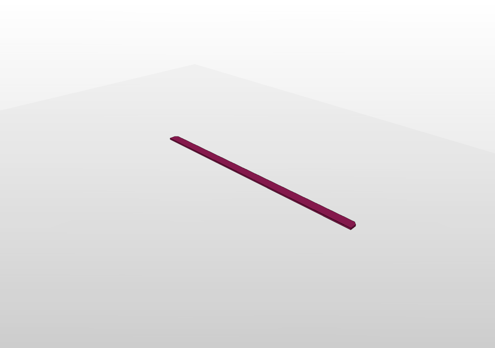 S02-P007Maße UNKNOWN 45c1f18c-f25e-45d1-ad77-7ae0bbd91a7bInstanzpfad [] · UNKNOWN_UNSUPPORTED_BREP |
| 11 · ① | 1 | Bauteil, Funktion offenDefault · Werkstoff offen | Maße UNKNOWNMaße/Funktion nicht bestätigt | 1 Originalbild ansehen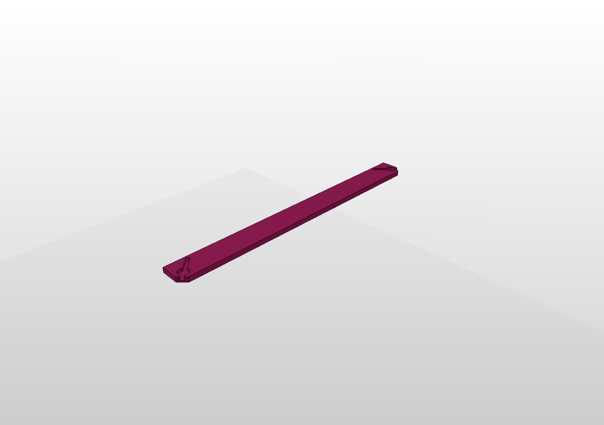 S02-P008Maße UNKNOWN 51038648-3e80-4bd4-95ad-7e9129e71141Instanzpfad [] · UNKNOWN_UNSUPPORTED_BREP |
| 12 | 1 | Bauteil, Funktion offenDefault · Werkstoff offen | Maße UNKNOWNMaße/Funktion nicht bestätigt | 1 Originalbild ansehenS02-P010Maße UNKNOWN 6117d509-66c8-4dcc-bd41-23e00e2c86cfInstanzpfad [] · UNKNOWN_UNSUPPORTED_BREP |
| 13 · ② | 1 | Bauteil, Funktion offenDefault · Werkstoff offen | Maße UNKNOWNMaße/Funktion nicht bestätigt | 1 Originalbild ansehenS02-P020Maße UNKNOWN f08876b9-e4f7-4e02-a679-a761eb18b2d3Instanzpfad [] · UNKNOWN_UNSUPPORTED_BREP |
| 14 | 3 | Zubehör-CAD-Geometrie nach LayerKORPUS-VERBINDER · Werkstoff offen | Maße UNKNOWNMaße/Funktion nicht bestätigt | 3 Originalbilder ansehenS02-P006Maße UNKNOWN 407f0039-7276-415e-be08-a953b94793cbInstanzpfad [] · UNKNOWN_UNSUPPORTED_BREPS02-P016Maße UNKNOWN 8f136fdf-139d-40be-9dc0-8f7d6e950b50Instanzpfad [] · UNKNOWN_UNSUPPORTED_BREP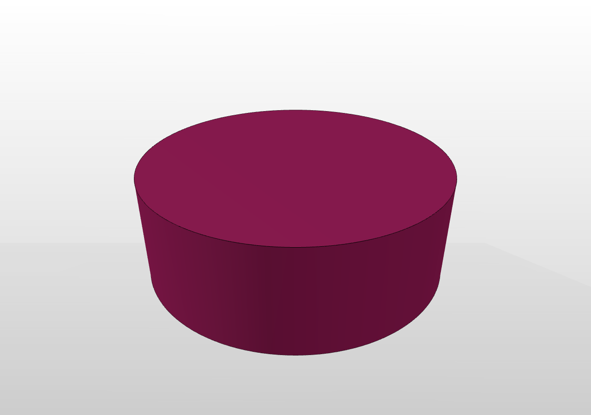 S02-P017Maße UNKNOWN 9575265f-dc3c-4e1f-bacd-a8eb1722eeb7Instanzpfad [] · UNKNOWN_UNSUPPORTED_BREP |
Nummern sind die unveränderten V0.1-Stücklistenzeilen. Jede Menge ist über die Original-GUIDs und Einzelbilder prüfbar. Eine Zeile mit gleichen Anzeigemaßen ist keine Fertigungs-Gleichteilfreigabe.
| Zeile | CAD-Stk. | Teil | Abmessungen aus V0 | Zugehörige Originale |
|---|---|---|---|---|
| 01 | 2 | Gerader RundstabDefault · Werkstoff offen | Ø 30,0 × 1.302,02 mmbestätigte Maße | 2 Originalbilder ansehenS03-P011Ø 30,0 × 1.302,02 mm 5cd7b64f-78a3-4abb-9030-249e14656314Instanzpfad [] · NATIVE_PRIMITIVE_CONFIRMEDS03-P013Ø 30,0 × 1.302,02 mm 8f9ece63-e1ec-4d06-a71a-50cea74bd822Instanzpfad [] · NATIVE_PRIMITIVE_CONFIRMED |
| 02 | 3 | Gerader RundstabDefault · Werkstoff offen | Ø 40,0 × 2.000,00 mmbestätigte Maße | 3 Originalbilder ansehenS03-P001Ø 40,0 × 2.000,00 mm 0686988b-03ab-40e5-b536-5c69472f6a32Instanzpfad [] · NATIVE_PRIMITIVE_CONFIRMEDS03-P004Ø 40,0 × 2.000,00 mm 3a64285b-bf71-4a8f-b962-154af6c5fd94Instanzpfad [] · NATIVE_PRIMITIVE_CONFIRMEDS03-P008Ø 40,0 × 2.000,00 mm 4e30559b-c108-4a8b-aab4-ab0dbc27becbInstanzpfad [] · NATIVE_PRIMITIVE_CONFIRMED |
| 03 | 1 | Bearbeiteter StabDefault · Werkstoff offen | Nenn-Ø ≈ 30,0 · L ≈ 1.302,02 mmNäherung, keine Zuschnittlänge | 1 Originalbild ansehenS03-P018Nenn-Ø ≈ 30,0 · L ≈ 1.302,02 mm fffcc5cb-a784-4b87-bbea-2acc51cf6920Instanzpfad [] · USER_ACCEPTED_BBOX_PROXY |
| 04 | 3 | Bearbeiteter StabDefault · Werkstoff offen | Nenn-Ø ≈ 30,0 · L ≈ 602,02 mmNäherung, keine Zuschnittlänge | 3 Originalbilder ansehenS03-P009Nenn-Ø ≈ 30,0 · L ≈ 602,02 mm 50d73629-3b20-4604-8acf-446906d4a6d5Instanzpfad [] · USER_ACCEPTED_BBOX_PROXYS03-P012Nenn-Ø ≈ 30,0 · L ≈ 602,02 mm 6bec8338-046d-42ac-aef4-187847627945Instanzpfad [] · USER_ACCEPTED_BBOX_PROXYS03-P016Nenn-Ø ≈ 30,0 · L ≈ 602,02 mm bda0a2dc-3c9e-48d6-aace-43730b0c0501Instanzpfad [] · USER_ACCEPTED_BBOX_PROXY |
| 05 | 1 | Bearbeiteter StabDefault · Werkstoff offen | Nenn-Ø ≈ 40,0 · L ≈ 2.000,00 mmNäherung, keine Zuschnittlänge | 1 Originalbild ansehenS03-P017Nenn-Ø ≈ 40,0 · L ≈ 2.000,00 mm fecd792e-0ec4-4727-a81f-f0f6e0dd6d74Instanzpfad [] · USER_ACCEPTED_BBOX_PROXY |
| 06 | 1 | RechteckplatteDefault · Werkstoff offen | 1.278,02 × 571,00 × 8,00 mmbestätigte Maße | 1 Originalbild ansehenS03-P0031.278,02 × 571,00 × 8,00 mm 149c6fbb-58f3-42b8-a257-b2300b296b63Instanzpfad [] · NATIVE_PRIMITIVE_CONFIRMED |
| 07 | 1 | RechteckplatteDefault · Werkstoff offen | 578,02 × 571,00 × 8,00 mmbestätigte Maße | 1 Originalbild ansehenS03-P007578,02 × 571,00 × 8,00 mm 49bc8931-e1bb-4e41-9036-0a9cbf365862Instanzpfad [] · NATIVE_PRIMITIVE_CONFIRMED |
| 08 | 1 | RechteckplatteEbene 01 · Werkstoff offen | 1.101,00 × 578,02 × 8,00 mmbestätigte Maße | 1 Originalbild ansehenS03-P0151.101,00 × 578,02 × 8,00 mm a64bb6dd-cd4a-4282-b3c1-45aa6eb7eae8Instanzpfad [] · NATIVE_PRIMITIVE_CONFIRMED |
| 09 | 1 | RechteckplatteEbene 01 · Werkstoff offen | 1.278,02 × 1.101,00 × 8,00 mmbestätigte Maße | 1 Originalbild ansehenS03-P0061.278,02 × 1.101,00 × 8,00 mm 407a2c10-c352-49fc-8818-203dd2e5df6aInstanzpfad [] · NATIVE_PRIMITIVE_CONFIRMED |
| 10 | 1 | Bauteil, Funktion offenDefault · Werkstoff offen | Maße UNKNOWNMaße/Funktion nicht bestätigt | 1 Originalbild ansehenS03-P002Maße UNKNOWN 0822b7b2-7a59-43a9-b204-a79e1b32c924Instanzpfad [] · UNKNOWN_UNSUPPORTED_BREP |
| 11 | 1 | Bauteil, Funktion offenDefault · Werkstoff offen | Maße UNKNOWNMaße/Funktion nicht bestätigt | 1 Originalbild ansehenS03-P005Maße UNKNOWN 3dec3e66-20e1-45bf-bac9-cc490cc6d7daInstanzpfad [] · UNKNOWN_UNSUPPORTED_BREP |
| 12 · ② | 1 | Bauteil, Funktion offenDefault · Werkstoff offen | Maße UNKNOWNMaße/Funktion nicht bestätigt | 1 Originalbild ansehenS03-P010Maße UNKNOWN 59b648cf-9874-449e-9d19-de284f7ff4c7Instanzpfad [] · UNKNOWN_UNSUPPORTED_BREP |
| 13 · ① | 1 | Bauteil, Funktion offenDefault · Werkstoff offen | Maße UNKNOWNMaße/Funktion nicht bestätigt | 1 Originalbild ansehen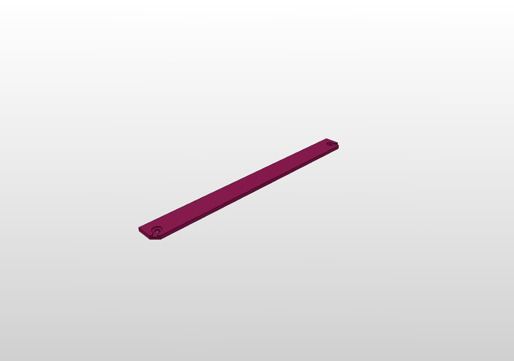 S03-P014Maße UNKNOWN a21d1366-e275-45f0-a0bf-81109c46a904Instanzpfad [] · UNKNOWN_UNSUPPORTED_BREP |
Die unklare Zusatzplatte 1a56dadb-a99c-4339-978e-91d060d84f67 bleibt wie in V0.1 ausgeschlossen: weder im Bild noch in der Stückliste.
Nummern sind die unveränderten V0.1-Stücklistenzeilen. Jede Menge ist über die Original-GUIDs und Einzelbilder prüfbar. Eine Zeile mit gleichen Anzeigemaßen ist keine Fertigungs-Gleichteilfreigabe.
| Zeile | CAD-Stk. | Teil | Abmessungen aus V0 | Zugehörige Originale |
|---|---|---|---|---|
| 01 | 2 | Gerader RundstabDefault · Werkstoff offen | Ø 30,0 × 1.302,02 mmbestätigte Maße | 2 Originalbilder ansehenS04-P008Ø 30,0 × 1.302,02 mm 30f892c6-a13c-454c-93c9-5153b8adc8f5Instanzpfad [] · NATIVE_PRIMITIVE_CONFIRMEDS04-P014Ø 30,0 × 1.302,02 mm a393e599-0044-4692-be0c-9ee3e2a12ec9Instanzpfad [] · NATIVE_PRIMITIVE_CONFIRMED |
| 02 | 3 | Gerader RundstabDefault · Werkstoff offen | Ø 40,0 × 2.000,00 mmbestätigte Maße | 3 Originalbilder ansehenS04-P003Ø 40,0 × 2.000,00 mm 1a70e148-f213-4779-8f34-1824e65bf8f5Instanzpfad [] · NATIVE_PRIMITIVE_CONFIRMEDS04-P017Ø 40,0 × 2.000,00 mm cb364047-27d3-44a0-9570-87f5c87c33a7Instanzpfad [] · NATIVE_PRIMITIVE_CONFIRMEDS04-P019Ø 40,0 × 2.000,00 mm d662e980-c3b0-45b5-abf4-d87ad75d897bInstanzpfad [] · NATIVE_PRIMITIVE_CONFIRMED |
| 03 | 1 | Bearbeiteter StabDefault · Werkstoff offen | Nenn-Ø ≈ 30,0 · L ≈ 1.302,02 mmNäherung, keine Zuschnittlänge | 1 Originalbild ansehenS04-P004Nenn-Ø ≈ 30,0 · L ≈ 1.302,02 mm 2294b5b7-0e40-42ab-ad3b-3248867747c9Instanzpfad [] · USER_ACCEPTED_BBOX_PROXY |
| 04 | 3 | Bearbeiteter StabDefault · Werkstoff offen | Nenn-Ø ≈ 30,0 · L ≈ 602,02 mmNäherung, keine Zuschnittlänge | 3 Originalbilder ansehenS04-P002Nenn-Ø ≈ 30,0 · L ≈ 602,02 mm 1863b0be-a8f6-4319-baf4-e7a1d73b6fcdInstanzpfad [] · USER_ACCEPTED_BBOX_PROXYS04-P005Nenn-Ø ≈ 30,0 · L ≈ 602,02 mm 24ae08ad-a7a1-499a-85c4-65368f6d6dd1Instanzpfad [] · USER_ACCEPTED_BBOX_PROXYS04-P010Nenn-Ø ≈ 30,0 · L ≈ 602,02 mm 6c6a076c-5021-4076-a1c6-260a330c99bfInstanzpfad [] · USER_ACCEPTED_BBOX_PROXY |
| 05 | 1 | Bearbeiteter StabDefault · Werkstoff offen | Nenn-Ø ≈ 40,0 · L ≈ 2.000,00 mmNäherung, keine Zuschnittlänge | 1 Originalbild ansehenS04-P020Nenn-Ø ≈ 40,0 · L ≈ 2.000,00 mm dca25deb-f30a-4156-bd5a-50ed637b63ceInstanzpfad [] · USER_ACCEPTED_BBOX_PROXY |
| 06 | 1 | RechteckplatteDefault · Werkstoff offen | 1.278,02 × 571,00 × 8,00 mmbestätigte Maße | 1 Originalbild ansehenS04-P0091.278,02 × 571,00 × 8,00 mm 5246571a-9854-4e9f-99ca-17b4b4aa1e8fInstanzpfad [] · NATIVE_PRIMITIVE_CONFIRMED |
| 07 | 1 | RechteckplatteDefault · Werkstoff offen | 578,02 × 571,00 × 8,00 mmbestätigte Maße | 1 Originalbild ansehenS04-P018578,02 × 571,00 × 8,00 mm d1147ae2-46c2-4cb4-a4d1-38072fce2618Instanzpfad [] · NATIVE_PRIMITIVE_CONFIRMED |
| 08 | 1 | RechteckplatteEbene 01 · Werkstoff offen | 1.101,00 × 578,02 × 8,00 mmbestätigte Maße | 1 Originalbild ansehenS04-P0071.101,00 × 578,02 × 8,00 mm 28bf7221-ff96-4d5f-b68b-01334a0c59aaInstanzpfad [] · NATIVE_PRIMITIVE_CONFIRMED |
| 09 | 1 | RechteckplatteEbene 01 · Werkstoff offen | 1.278,02 × 1.101,00 × 8,00 mmbestätigte Maße | 1 Originalbild ansehenS04-P0131.278,02 × 1.101,00 × 8,00 mm 9102c064-a3b5-4040-b50b-6c313135f042Instanzpfad [] · NATIVE_PRIMITIVE_CONFIRMED |
| 10 · ② | 1 | Bauteil, Funktion offenDefault · Werkstoff offen | Maße UNKNOWNMaße/Funktion nicht bestätigt | 1 Originalbild ansehenS04-P001Maße UNKNOWN 01f42681-08bf-4bb5-9469-631beb1fb0abInstanzpfad [] · UNKNOWN_UNSUPPORTED_BREP |
| 11 · ① | 1 | Bauteil, Funktion offenDefault · Werkstoff offen | Maße UNKNOWNMaße/Funktion nicht bestätigt | 1 Originalbild ansehenS04-P006Maße UNKNOWN 25cc72b9-9091-4965-a35d-d5dfe3f28b70Instanzpfad [] · UNKNOWN_UNSUPPORTED_BREP |
| 12 | 1 | Bauteil, Funktion offenDefault · Werkstoff offen | Maße UNKNOWNMaße/Funktion nicht bestätigt | 1 Originalbild ansehenS04-P011Maße UNKNOWN 70a67dee-188f-46ac-9d88-74c52a53e667Instanzpfad [] · UNKNOWN_UNSUPPORTED_BREP |
| 13 | 1 | Bauteil, Funktion offenDefault · Werkstoff offen | Maße UNKNOWNMaße/Funktion nicht bestätigt | 1 Originalbild ansehenS04-P015Maße UNKNOWN a41acda2-b038-4ceb-9399-89699c001685Instanzpfad [] · UNKNOWN_UNSUPPORTED_BREP |
| 14 | 3 | Zubehör-CAD-Geometrie nach LayerKORPUS-VERBINDER · Werkstoff offen | Maße UNKNOWNMaße/Funktion nicht bestätigt | 3 Originalbilder ansehenS04-P012Maße UNKNOWN 72448f61-3986-4552-9ef3-05ce487fbe86Instanzpfad [] · UNKNOWN_UNSUPPORTED_BREP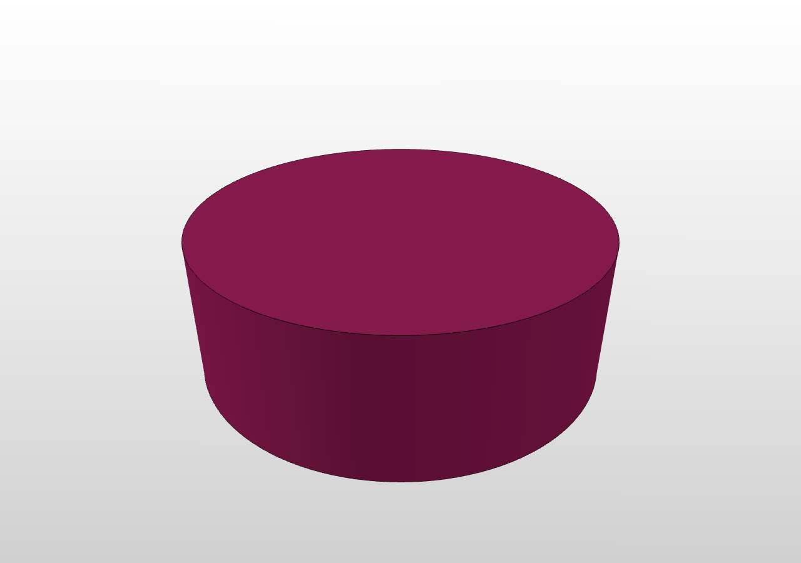 S04-P016Maße UNKNOWN accb7a94-f36e-48e9-982d-03720e4a28c7Instanzpfad [] · UNKNOWN_UNSUPPORTED_BREPS04-P021Maße UNKNOWN fa8c57db-670c-41dc-88c7-3ac3375cb8c8Instanzpfad [] · UNKNOWN_UNSUPPORTED_BREP |
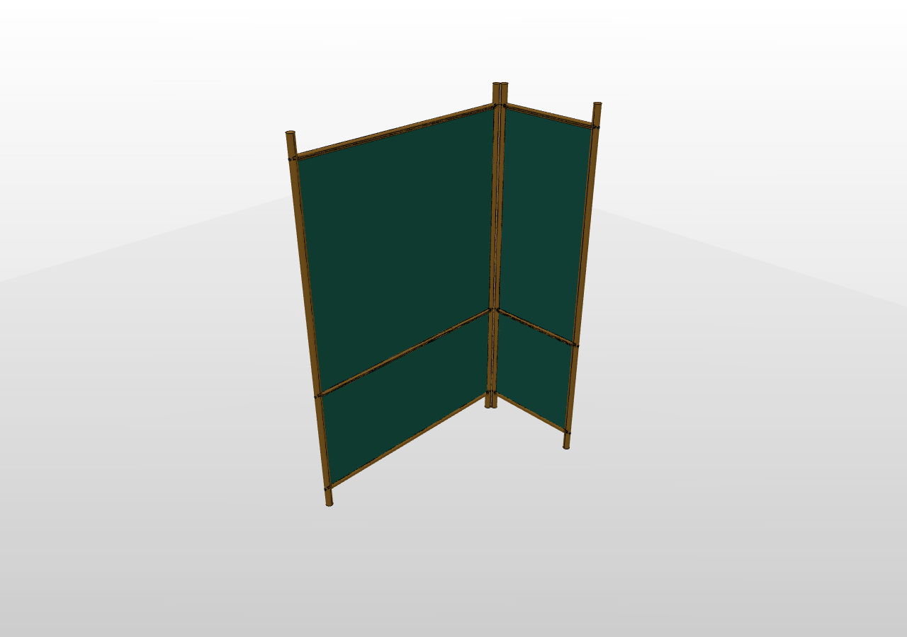
V0.1-Ansicht unverändert übernommen, kein neuer Variantenvergleich. Ihre Farbgebung zeigt den bisherigen Maßstatus.
Nummern sind die unveränderten V0.1-Stücklistenzeilen. Jede Menge ist über die Original-GUIDs und Einzelbilder prüfbar. Eine Zeile mit gleichen Anzeigemaßen ist keine Fertigungs-Gleichteilfreigabe.
| Zeile | CAD-Stk. | Teil | Abmessungen aus V0 | Zugehörige Originale |
|---|---|---|---|---|
| 01 | 3 | Bearbeiteter StabBUCHE_STAB_30mm · Werkstoff offen | Nenn-Ø ≈ 30,0 · L ≈ 600,00 mmNäherung, keine Zuschnittlänge | 3 Originalbilder ansehenS01-P030Nenn-Ø ≈ 30,0 · L ≈ 600,00 mm 59c67b3d-ed56-4fb2-b565-cc1abd8d0cf0Instanzpfad [] · USER_ACCEPTED_BBOX_PROXYS01-P034Nenn-Ø ≈ 30,0 · L ≈ 600,00 mm 6d5a6bc6-c61f-4b7f-92ee-b6954b9f7640Instanzpfad [] · USER_ACCEPTED_BBOX_PROXYS01-P065Nenn-Ø ≈ 30,0 · L ≈ 600,00 mm ed6efb92-75d4-4d51-ab63-d274c02b17afInstanzpfad [] · USER_ACCEPTED_BBOX_PROXY |
| 02 | 3 | Bearbeiteter StabBUCHE_STAB_30mm · Werkstoff offen | Nenn-Ø ≈ 30,0 · L ≈ 1.302,36 mmNäherung, keine Zuschnittlänge | 3 Originalbilder ansehenS01-P024Nenn-Ø ≈ 30,0 · L ≈ 1.302,36 mm 41eee5f5-c6fa-4f5d-9abe-798f5d99f25bInstanzpfad [] · USER_ACCEPTED_DIAGONAL_PROXYS01-P028Nenn-Ø ≈ 30,0 · L ≈ 1.302,36 mm 5785393d-5128-462a-a3b7-969ad1342bd6Instanzpfad [] · USER_ACCEPTED_DIAGONAL_PROXY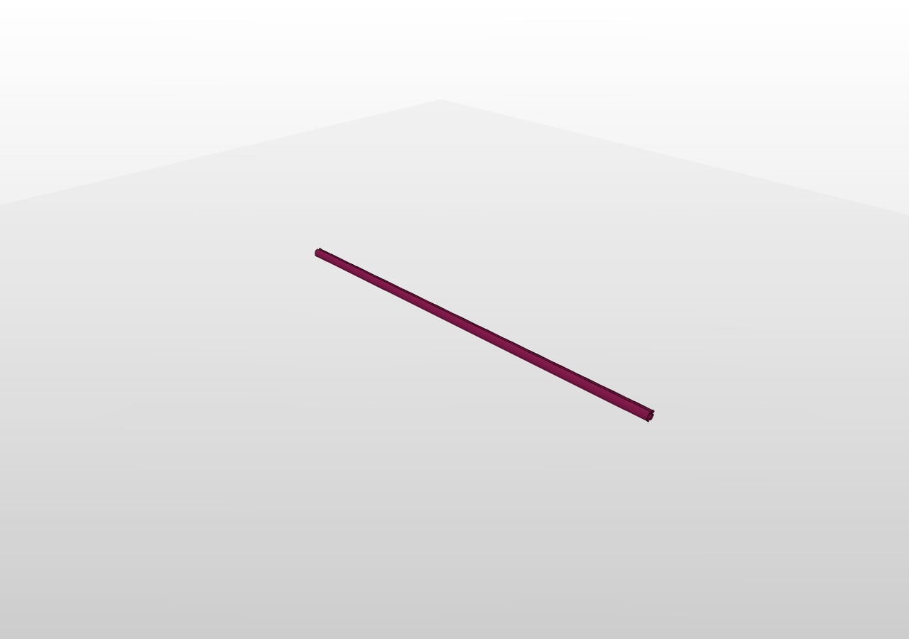 S01-P069Nenn-Ø ≈ 30,0 · L ≈ 1.302,36 mm ffcb8d2d-d2e3-4551-b139-82dc29c40c8bInstanzpfad [] · USER_ACCEPTED_DIAGONAL_PROXY |
| 03 | 4 | Bearbeiteter StabBUHCE_STAB_40mm · Werkstoff offen | Nenn-Ø ≈ 40,0 · L ≈ 2.100,00 mmNäherung, keine Zuschnittlänge | 4 Originalbilder ansehenS01-P014Nenn-Ø ≈ 40,0 · L ≈ 2.100,00 mm 1ead16fa-7951-4edd-9d46-9e327e629afeInstanzpfad [] · USER_ACCEPTED_BBOX_PROXYS01-P021Nenn-Ø ≈ 40,0 · L ≈ 2.100,00 mm 3656e979-a93e-41bc-94d7-8c18e402f4c0Instanzpfad [] · USER_ACCEPTED_BBOX_PROXYS01-P038Nenn-Ø ≈ 40,0 · L ≈ 2.100,00 mm 7f40d1be-aa51-4268-a2f9-20eb8431e4b3Instanzpfad [] · USER_ACCEPTED_BBOX_PROXYS01-P054Nenn-Ø ≈ 40,0 · L ≈ 2.100,00 mm c5398de1-4500-4f57-8b61-33aedb569755Instanzpfad [] · USER_ACCEPTED_BBOX_PROXY |
| 04 | 1 | RechteckplatteBUCHE_MTPLX_8mm · Werkstoff offen | 1.272,02 × 600,00 × 8,00 mmbestätigte Maße | 1 Originalbild ansehenS01-P0041.272,02 × 600,00 × 8,00 mm 059a6e64-5611-4745-bdcf-87a575dbc79bInstanzpfad [] · NATIVE_PRIMITIVE_CONFIRMED |
| 05 | 1 | RechteckplatteBUCHE_MTPLX_8mm · Werkstoff offen | 600,00 × 570,00 × 8,00 mmbestätigte Maße | 1 Originalbild ansehenS01-P070600,00 × 570,00 × 8,00 mm ffdf1c81-6ac0-445d-828b-22aa55940ac1Instanzpfad [] · NATIVE_PRIMITIVE_CONFIRMED |
| 06 | 1 | RechteckplatteGlas_ESG_6mm · Werkstoff offen | 1.228,00 × 568,00 × 6,00 mmbestätigte Maße | 1 Originalbild ansehenS01-P0561.228,00 × 568,00 × 6,00 mm c9c7fa44-04fa-4cc9-9c44-def94f832a22Instanzpfad [] · NATIVE_PRIMITIVE_CONFIRMED |
| 07 | 1 | RechteckplatteGlas_ESG_6mm · Werkstoff offen | 1.270,02 × 1.228,00 × 6,00 mmbestätigte Maße | 1 Originalbild ansehenS01-P0551.270,02 × 1.228,00 × 6,00 mm c5c9ca65-56eb-4c39-b204-5b71708ce7f4Instanzpfad [] · NATIVE_PRIMITIVE_CONFIRMED |
| 08 | 13 | Zubehör-CAD-Geometrie nach LayerAbdeckkappe · Werkstoff offen | Maße UNKNOWNMaße/Funktion nicht bestätigt | 13 Originalbilder ansehenS01-P010Maße UNKNOWN 19804e18-aa05-4327-a542-b36bb75014afInstanzpfad [] · UNKNOWN_UNSUPPORTED_BREPS01-P016Maße UNKNOWN 2781176b-d30a-465d-8da1-a3f9231d9ccdInstanzpfad [] · UNKNOWN_UNSUPPORTED_BREPS01-P020Maße UNKNOWN 337d9506-e84f-462e-9a7f-09d4997f85feInstanzpfad [] · UNKNOWN_UNSUPPORTED_BREPS01-P023Maße UNKNOWN 3af0aa1b-99fe-4273-b163-0c17c6fca75aInstanzpfad [] · UNKNOWN_UNSUPPORTED_BREPS01-P029Maße UNKNOWN 59959240-0155-485f-9cc6-254a280e06beInstanzpfad [] · UNKNOWN_UNSUPPORTED_BREP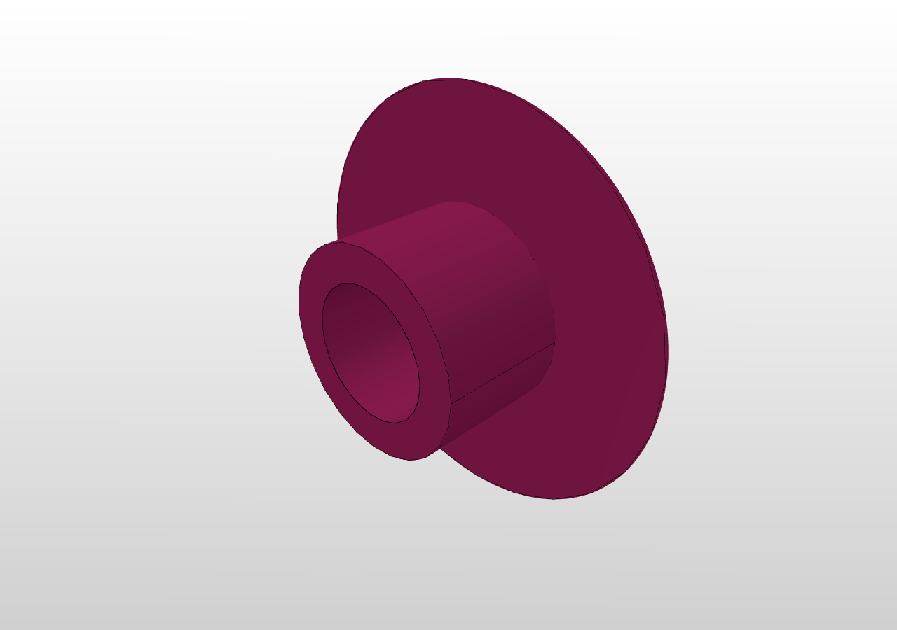 S01-P033Maße UNKNOWN 600cceae-5398-4318-b94f-8ed514415cd6Instanzpfad [] · UNKNOWN_UNSUPPORTED_BREPS01-P035Maße UNKNOWN 6e0adccf-dbab-4ac1-9e59-023f35c31fc0Instanzpfad [] · UNKNOWN_UNSUPPORTED_BREPS01-P036Maße UNKNOWN 6fcfdcb0-2ca6-4e7b-91bc-eb0075a7e359Instanzpfad [] · UNKNOWN_UNSUPPORTED_BREP S01-P047Maße UNKNOWN 9e8c1b36-c660-40d5-a382-6f5630eb8a5bInstanzpfad [] · UNKNOWN_UNSUPPORTED_BREPS01-P048Maße UNKNOWN a5e11eb2-8278-4ae3-9b96-5c739a7a2d4dInstanzpfad [] · UNKNOWN_UNSUPPORTED_BREP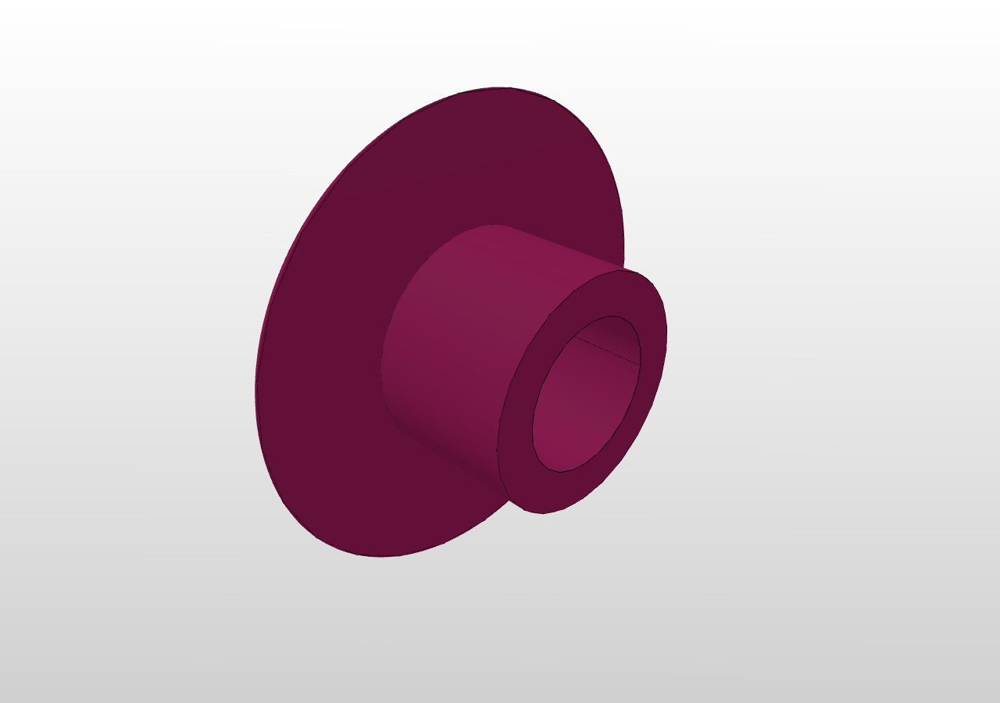 S01-P051Maße UNKNOWN b1fb4c05-0f32-43ea-8442-5a73ab343892Instanzpfad [] · UNKNOWN_UNSUPPORTED_BREPS01-P053Maße UNKNOWN c2d6200f-f400-4f20-9d07-c2959f405aa9Instanzpfad [] · UNKNOWN_UNSUPPORTED_BREPS01-P058Maße UNKNOWN cd36aa9f-1fe3-471f-b941-63bd756aee41Instanzpfad [] · UNKNOWN_UNSUPPORTED_BREP |
| 09 | 12 | Zubehör-CAD-Geometrie nach LayerDIN912_M8-30 · Werkstoff offen | Maße UNKNOWNMaße/Funktion nicht bestätigt | 12 Originalbilder ansehen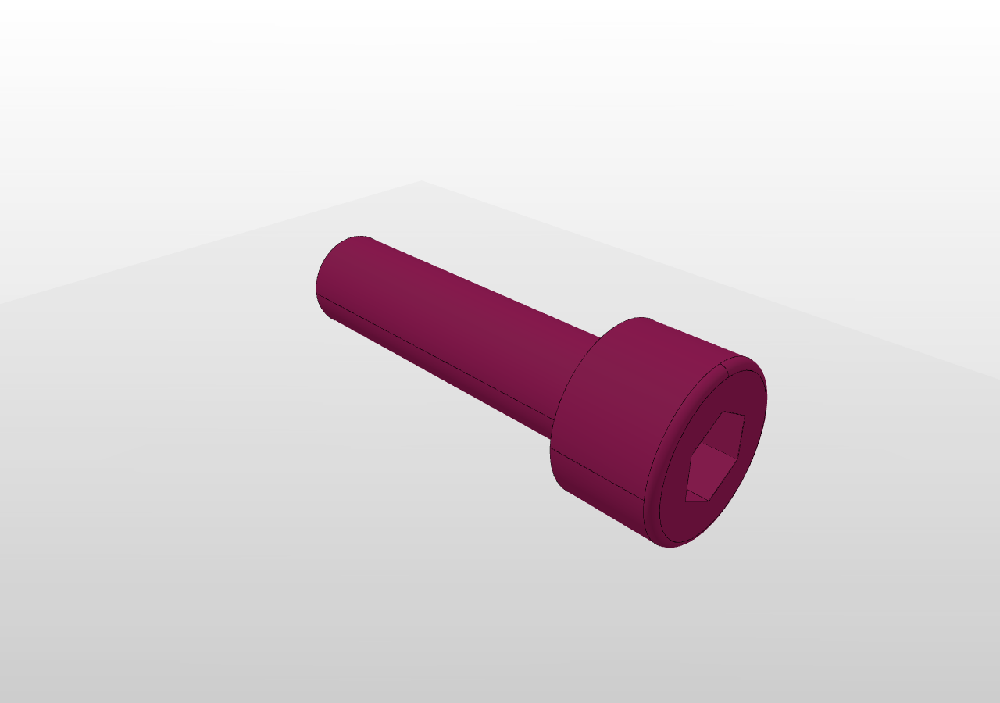 S01-P005Maße UNKNOWN 05f71441-2427-41fc-91c2-703c7b7d35dbInstanzpfad [] · UNKNOWN_UNSUPPORTED_BREPS01-P006Maße UNKNOWN 0912d1a7-d84a-49f2-80e3-40f9a44f671cInstanzpfad [] · UNKNOWN_UNSUPPORTED_BREP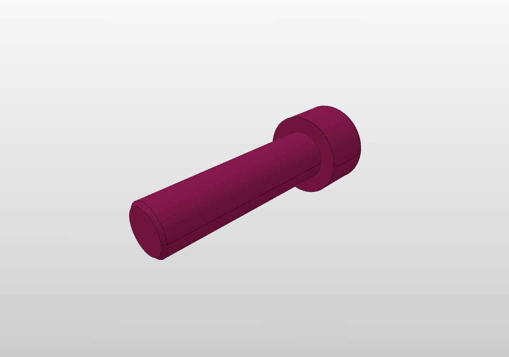 S01-P007Maße UNKNOWN 1192bc51-dcc5-4898-ae1d-d9ae668b6978Instanzpfad [] · UNKNOWN_UNSUPPORTED_BREP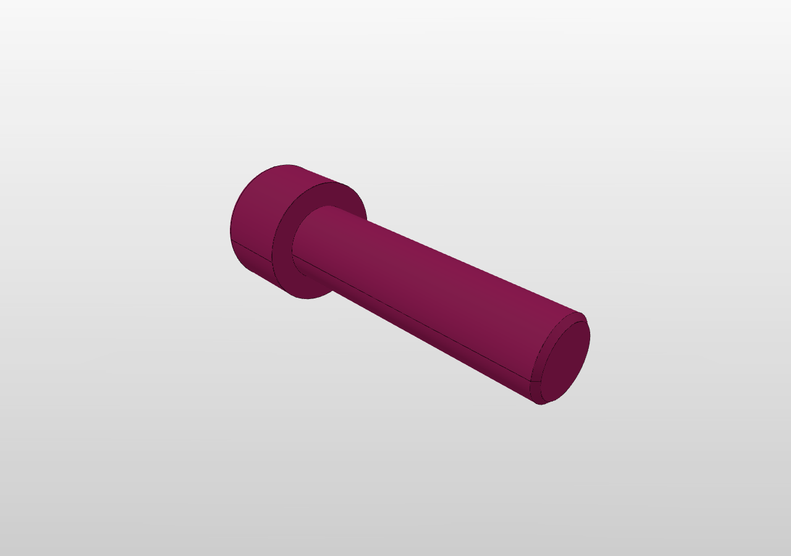 S01-P008Maße UNKNOWN 13583016-8a9c-405b-979f-ed9ffbaa1c11Instanzpfad [] · UNKNOWN_UNSUPPORTED_BREP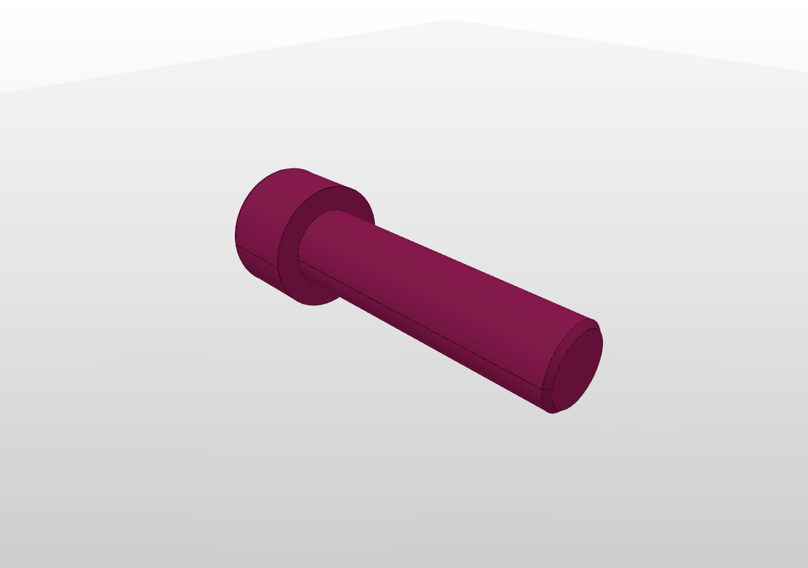 S01-P009Maße UNKNOWN 14f7a561-ffe2-47f2-9f31-9ee7ad92805eInstanzpfad [] · UNKNOWN_UNSUPPORTED_BREP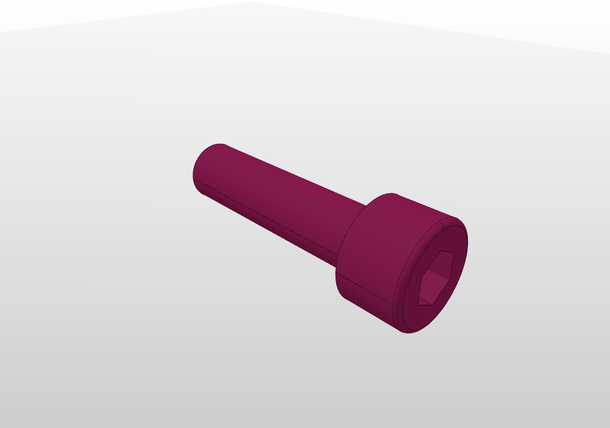 S01-P018Maße UNKNOWN 2bf5643d-ef90-4f6f-aca8-c40dd37e2737Instanzpfad [] · UNKNOWN_UNSUPPORTED_BREP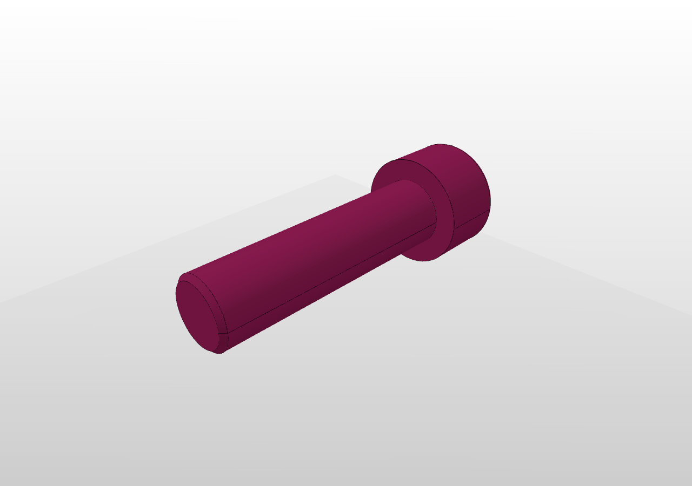 S01-P037Maße UNKNOWN 7e9d84cb-23b3-4f38-a1d4-9a8239911465Instanzpfad [] · UNKNOWN_UNSUPPORTED_BREP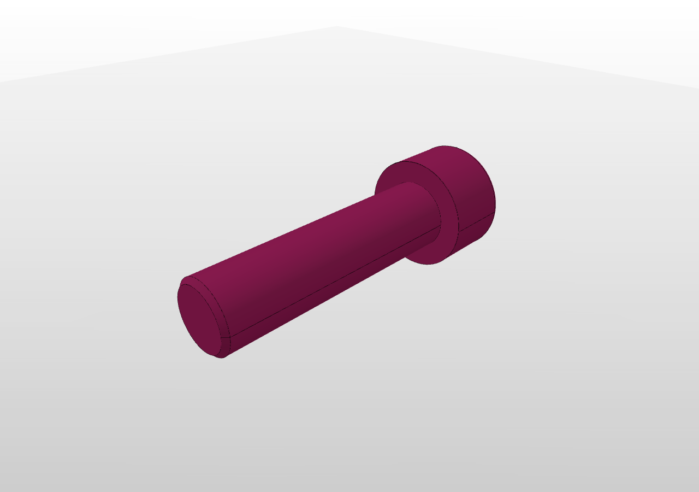 S01-P041Maße UNKNOWN 86740115-6cf5-4999-9d37-a4ed3d6040cdInstanzpfad [] · UNKNOWN_UNSUPPORTED_BREP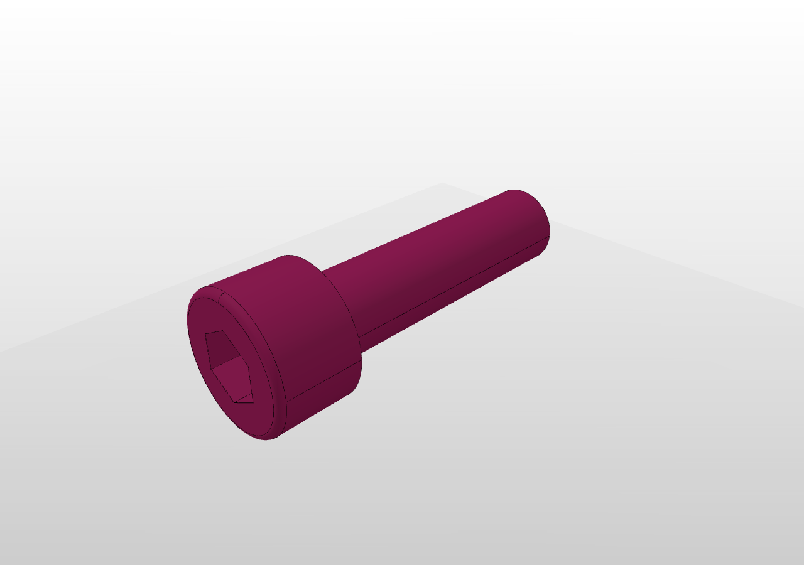 S01-P042Maße UNKNOWN 87c2095c-a0ff-43ab-afe3-ba900290b13eInstanzpfad [] · UNKNOWN_UNSUPPORTED_BREPS01-P050Maße UNKNOWN b0d955fb-d74f-40c6-bafa-253bf9e223aaInstanzpfad [] · UNKNOWN_UNSUPPORTED_BREP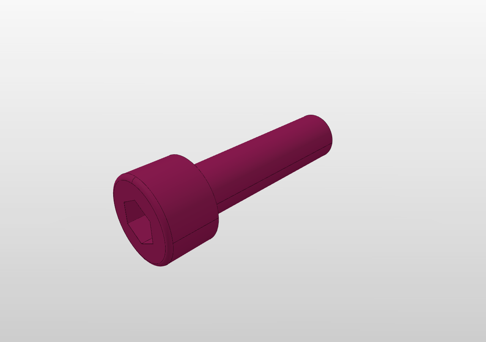 S01-P063Maße UNKNOWN e47f50dc-8841-4cb0-bbbf-3caed22127e3Instanzpfad [] · UNKNOWN_UNSUPPORTED_BREPS01-P068Maße UNKNOWN ffba1971-64fa-4fb3-9e5f-2ceadb094388Instanzpfad [] · UNKNOWN_UNSUPPORTED_BREP |
| 10 | 7 | Zubehör-CAD-Geometrie nach LayerGlasschutz-Klebeband · Werkstoff offen | Maße UNKNOWNMaße/Funktion nicht bestätigt | 7 Originalbilder ansehenS01-P001Maße UNKNOWN 013c37eb-7140-48b8-8807-a4d27bfece90Instanzpfad [] · UNKNOWN_UNSUPPORTED_BREPS01-P025Maße UNKNOWN 45c3c3e5-e9aa-4485-bcfb-51676561f325Instanzpfad [] · UNKNOWN_UNSUPPORTED_BREPS01-P026Maße UNKNOWN 48f4f09c-cdfb-461c-af5e-f158179cb451Instanzpfad [] · UNKNOWN_UNSUPPORTED_BREP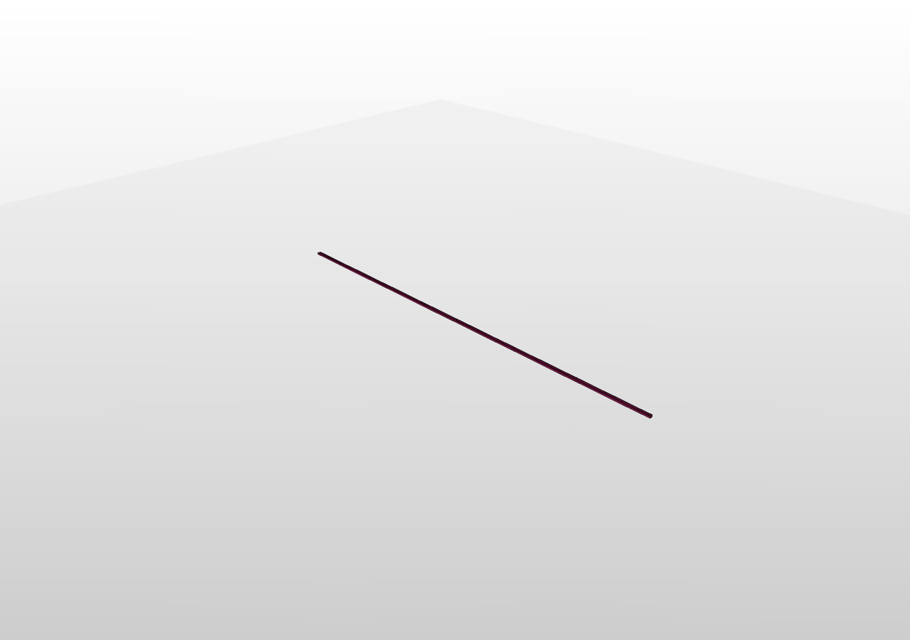 S01-P032Maße UNKNOWN 5c971636-84ef-460c-ab44-cd1c8b8ddb64Instanzpfad [] · UNKNOWN_UNSUPPORTED_BREP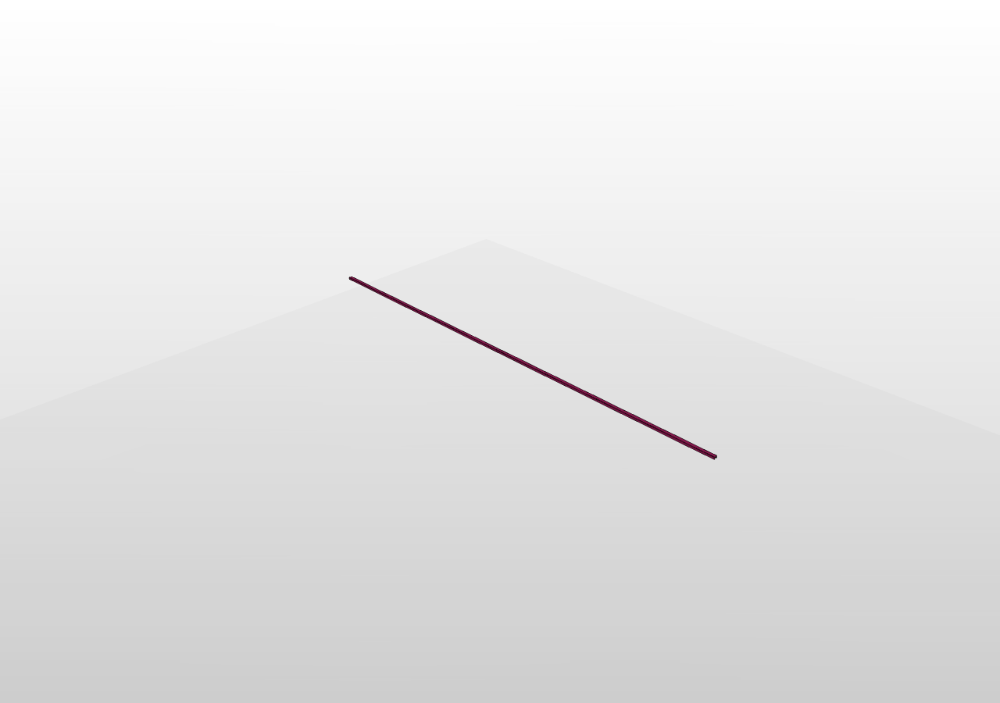 S01-P049Maße UNKNOWN ac7c3fa7-4bdb-4fe6-85b0-8830e596c850Instanzpfad [] · UNKNOWN_UNSUPPORTED_BREPS01-P060Maße UNKNOWN d31d6057-d7c4-4977-80c9-f7882e02e69dInstanzpfad [] · UNKNOWN_UNSUPPORTED_BREPS01-P061Maße UNKNOWN d4c1f571-1f7a-45f8-98b4-0a718655e4beInstanzpfad [] · UNKNOWN_UNSUPPORTED_BREP |
| 11 | 24 | Zubehör-CAD-Geometrie nach LayerM8_Gewundemuffe_DIN7965 · Werkstoff offen | Maße UNKNOWNMaße/Funktion nicht bestätigt | 24 Originalbilder ansehenS01-P002Maße UNKNOWN 0197f36a-4eb1-40ec-b061-891b0d61e45cInstanzpfad [] · UNKNOWN_UNSUPPORTED_BREPS01-P003Maße UNKNOWN 01af0d4c-ed23-4f04-b07e-ada803670581Instanzpfad [] · UNKNOWN_UNSUPPORTED_BREP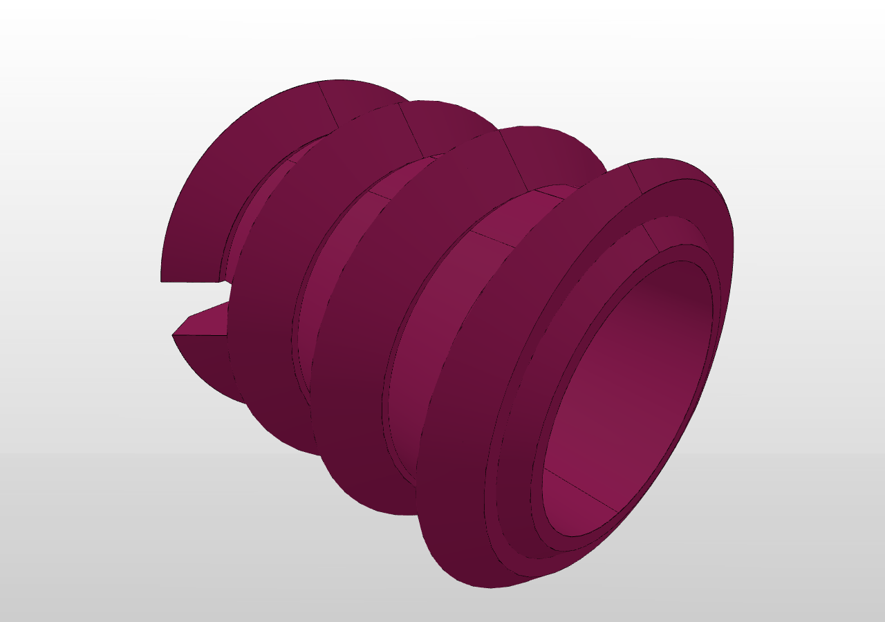 S01-P011Maße UNKNOWN 1b1987d4-d741-4aad-8b04-dcb2fb63a760Instanzpfad [] · UNKNOWN_UNSUPPORTED_BREPS01-P012Maße UNKNOWN 1d4c6e17-8244-42ce-a903-2458bd4ac592Instanzpfad [] · UNKNOWN_UNSUPPORTED_BREPS01-P013Maße UNKNOWN 1d7e4ba2-5bf8-450e-bf57-2c468dcd7061Instanzpfad [] · UNKNOWN_UNSUPPORTED_BREP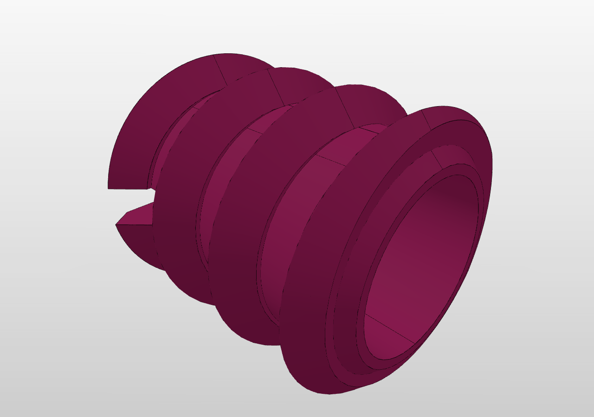 S01-P015Maße UNKNOWN 20b02f3c-acda-4a68-b9f6-db9ab0028ee5Instanzpfad [] · UNKNOWN_UNSUPPORTED_BREP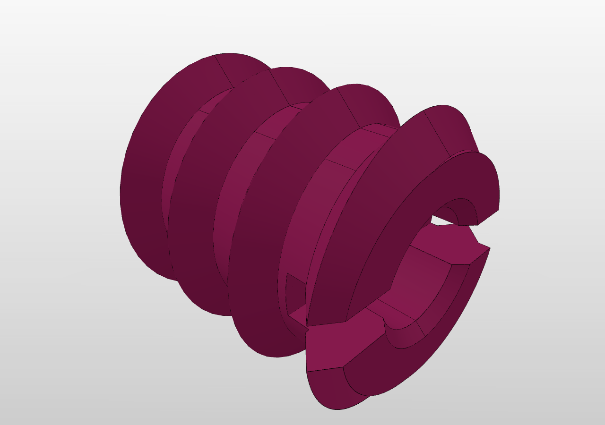 S01-P017Maße UNKNOWN 29b6e052-c015-456e-99b5-b038e700439eInstanzpfad [] · UNKNOWN_UNSUPPORTED_BREPS01-P019Maße UNKNOWN 2cbac45f-54e2-4ed4-a1aa-4b938e3b952aInstanzpfad [] · UNKNOWN_UNSUPPORTED_BREPS01-P022Maße UNKNOWN 374629b4-2027-4dc0-900b-8876340fbb6bInstanzpfad [] · UNKNOWN_UNSUPPORTED_BREP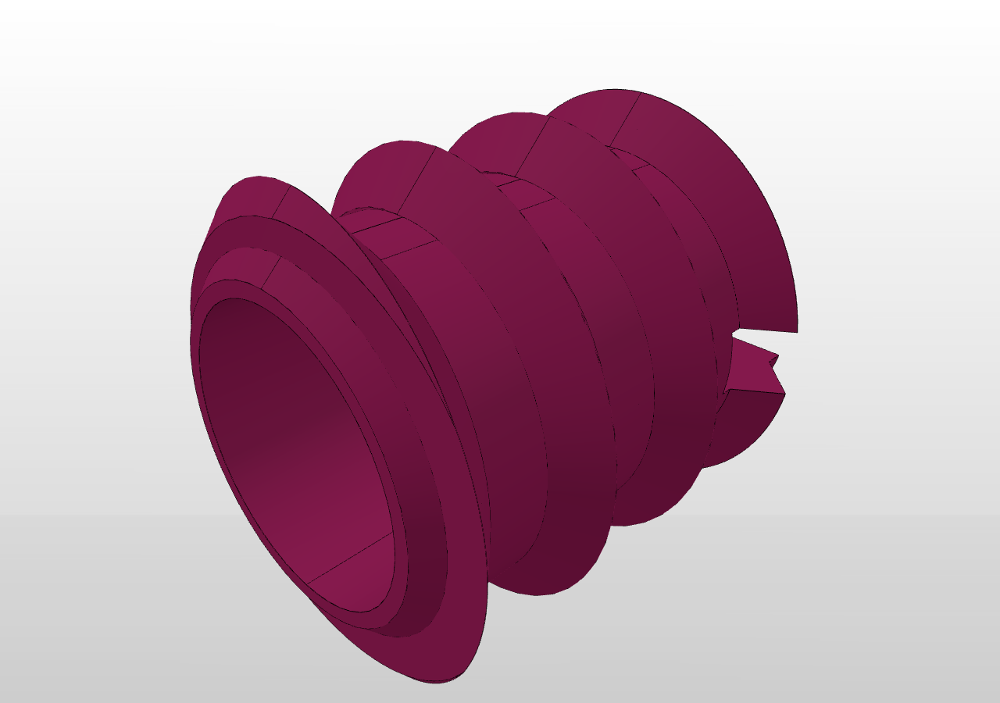 S01-P027Maße UNKNOWN 4f5fbe73-3140-4456-8f0e-f0cb1af221fbInstanzpfad [] · UNKNOWN_UNSUPPORTED_BREPS01-P031Maße UNKNOWN 5ab25b92-4858-42d8-afe8-6d39f6025b0dInstanzpfad [] · UNKNOWN_UNSUPPORTED_BREPS01-P039Maße UNKNOWN 839d5b88-4291-48eb-aca4-bc6b57d49f93Instanzpfad [] · UNKNOWN_UNSUPPORTED_BREP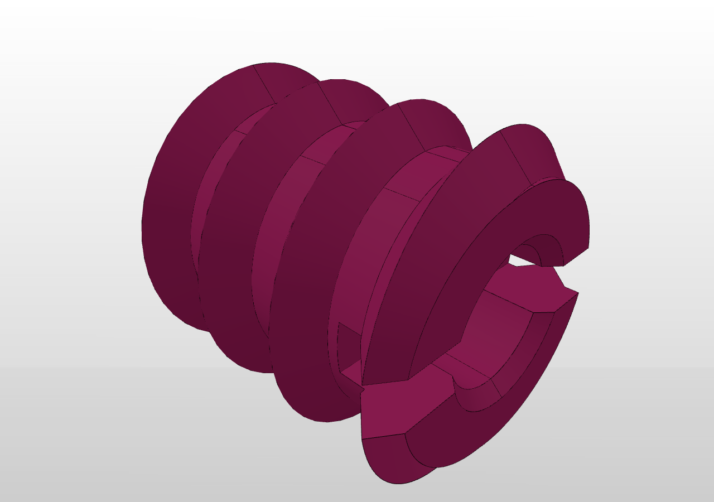 S01-P040Maße UNKNOWN 85caebf0-3a74-456c-8344-3a16a887e381Instanzpfad [] · UNKNOWN_UNSUPPORTED_BREPS01-P043Maße UNKNOWN 89387961-ca72-45e6-9484-e723cdf2d87dInstanzpfad [] · UNKNOWN_UNSUPPORTED_BREPS01-P044Maße UNKNOWN 8c22dc40-18b0-4fe6-a989-a45e8e042027Instanzpfad [] · UNKNOWN_UNSUPPORTED_BREPS01-P045Maße UNKNOWN 9acc089f-52f5-42ac-bca9-84aec08b328bInstanzpfad [] · UNKNOWN_UNSUPPORTED_BREPS01-P046Maße UNKNOWN 9cf819bf-d43b-4e3e-9c1d-80dc79d281ecInstanzpfad [] · UNKNOWN_UNSUPPORTED_BREP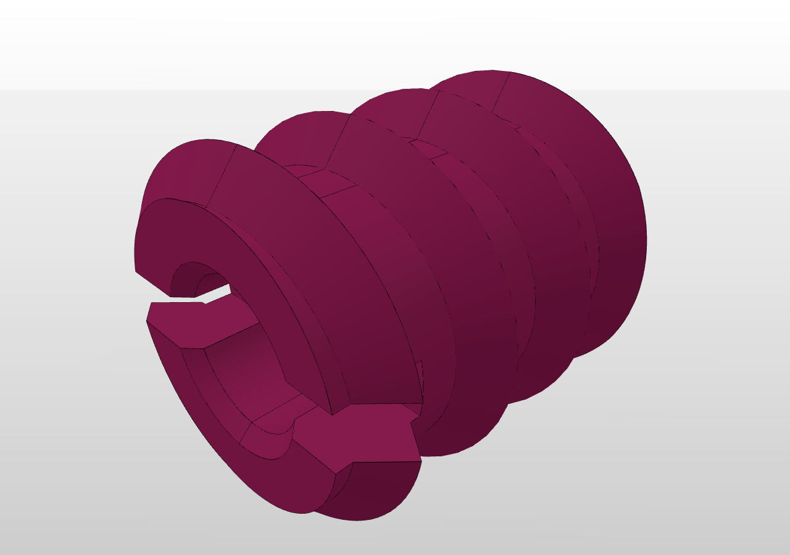 S01-P052Maße UNKNOWN bc9cf64d-3a0b-4976-b7c8-e2cdd12bb478Instanzpfad [] · UNKNOWN_UNSUPPORTED_BREPS01-P057Maße UNKNOWN cc0535cc-3e86-4629-ac0e-c836b9aaa612Instanzpfad [] · UNKNOWN_UNSUPPORTED_BREPS01-P059Maße UNKNOWN ce784795-691a-4624-ab68-75f8db82ab9cInstanzpfad [] · UNKNOWN_UNSUPPORTED_BREPS01-P062Maße UNKNOWN d854fada-2ddc-4d3f-8957-f6c8efd636c6Instanzpfad [] · UNKNOWN_UNSUPPORTED_BREPS01-P064Maße UNKNOWN e664b66f-ee27-4f0a-b9c7-a3833aa859c6Instanzpfad [] · UNKNOWN_UNSUPPORTED_BREPS01-P066Maße UNKNOWN f491cf67-ec1f-41cb-9a73-6ea77479f17fInstanzpfad [] · UNKNOWN_UNSUPPORTED_BREPS01-P067Maße UNKNOWN fc482b1f-a9fe-4057-b2c9-6e53be13fef5Instanzpfad [] · UNKNOWN_UNSUPPORTED_BREP |
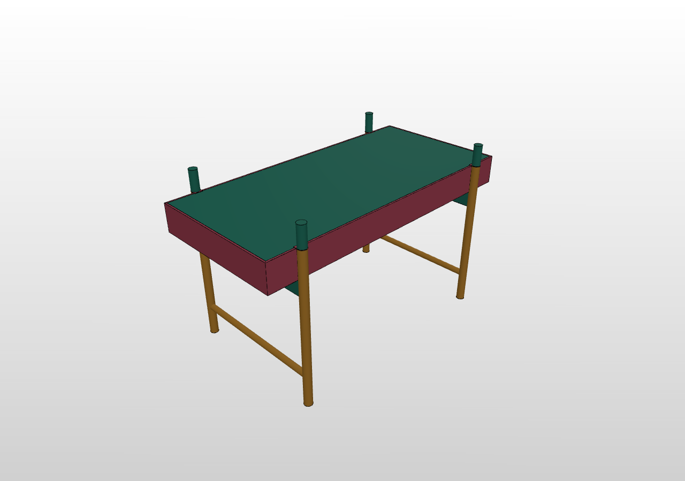
V0.1-Ansicht unverändert übernommen, kein neuer Variantenvergleich. Ihre Farbgebung zeigt den bisherigen Maßstatus.
Nummern sind die unveränderten V0.1-Stücklistenzeilen. Jede Menge ist über die Original-GUIDs und Einzelbilder prüfbar. Eine Zeile mit gleichen Anzeigemaßen ist keine Fertigungs-Gleichteilfreigabe.
| Zeile | CAD-Stk. | Teil | Abmessungen aus V0 | Zugehörige Originale |
|---|---|---|---|---|
| 01 | 4 | Gerader RundstabDefault · Werkstoff offen | Ø 40,0 × 100,00 mmbestätigte Maße | 4 Originalbilder ansehenS05-P003Ø 40,0 × 100,00 mm 1b6a8690-719d-47e3-a7e0-9c477cf3e56bInstanzpfad [] · NATIVE_PRIMITIVE_CONFIRMEDS05-P011Ø 40,0 × 100,00 mm 7d3f3db2-6a5c-4666-8210-f752f31d5c97Instanzpfad [] · NATIVE_PRIMITIVE_CONFIRMEDS05-P017Ø 40,0 × 100,00 mm d5f5e801-bdf7-4d77-90b6-099caca6d1f6Instanzpfad [] · NATIVE_PRIMITIVE_CONFIRMEDS05-P020Ø 40,0 × 100,00 mm e11579a2-9b1e-449a-87d7-e757698bd7ecInstanzpfad [] · NATIVE_PRIMITIVE_CONFIRMED |
| 02 | 2 | Bearbeiteter StabDefault · Werkstoff offen | Nenn-Ø ≈ 30,0 · L ≈ 679,07 mmNäherung, keine Zuschnittlänge | 2 Originalbilder ansehenS05-P002Nenn-Ø ≈ 30,0 · L ≈ 679,07 mm 04ef5a10-33e4-4b84-a862-bbc39933f6a0Instanzpfad [] · USER_ACCEPTED_BBOX_PROXYS05-P004Nenn-Ø ≈ 30,0 · L ≈ 679,07 mm 27ce8b2c-7794-4c6a-a9e2-bd9cfe41ed45Instanzpfad [] · USER_ACCEPTED_BBOX_PROXY |
| 03 | 4 | Bearbeiteter StabDefault · Werkstoff offen | Nenn-Ø ≈ 40,0 · L ≈ 750,00 mmNäherung, keine Zuschnittlänge | 4 Originalbilder ansehenS05-P005Nenn-Ø ≈ 40,0 · L ≈ 750,00 mm 2d928077-8a9a-4191-b05a-ea1a3bbd2387Instanzpfad [] · USER_ACCEPTED_BBOX_PROXYS05-P006Nenn-Ø ≈ 40,0 · L ≈ 750,00 mm 32c99c6f-426c-4368-ac80-57588ae4b1ffInstanzpfad [] · USER_ACCEPTED_BBOX_PROXYS05-P007Nenn-Ø ≈ 40,0 · L ≈ 750,00 mm 3b9f69d8-218d-4d60-be23-ed72bcfe806fInstanzpfad [] · USER_ACCEPTED_BBOX_PROXYS05-P012Nenn-Ø ≈ 40,0 · L ≈ 750,00 mm 86adb058-5eb2-4be1-86d6-ddc4b83657bdInstanzpfad [] · USER_ACCEPTED_BBOX_PROXY |
| 04 | 1 | RechteckplatteDefault · Werkstoff offen | 1.368,00 × 628,00 × 16,00 mmbestätigte Maße | 1 Originalbild ansehenS05-P0161.368,00 × 628,00 × 16,00 mm cdaeb81b-923e-429a-99e1-541f3df76b67Instanzpfad [] · NATIVE_PRIMITIVE_CONFIRMED |
| 05 | 1 | RechteckplatteEbene 01 · Werkstoff offen | 1.382,00 × 642,00 × 8,00 mmbestätigte Maße | 1 Originalbild ansehenS05-P0231.382,00 × 642,00 × 8,00 mm f6f4cdaa-5aa1-48a4-8f3d-479baa56c1c5Instanzpfad [] · NATIVE_PRIMITIVE_CONFIRMED |
| 06 | 1 | Quader, Zweck offenDefault · Werkstoff offen | 16,00 × 80,00 × 1.070,42 mmbestätigte Maße | 1 Originalbild ansehenS05-P01416,00 × 80,00 × 1.070,42 mm c01a9fbb-131f-4bc3-9904-b49d85259488Instanzpfad [] · NATIVE_PRIMITIVE_CONFIRMED |
| 07 | 2 | Quader, Zweck offenDefault · Werkstoff offen | 16,00 × 80,00 × 684,00 mmbestätigte Maße | 2 Originalbilder ansehenS05-P01916,00 × 80,00 × 684,00 mm de775da1-30e1-49fb-8882-a58b25c3db98Instanzpfad [] · NATIVE_PRIMITIVE_CONFIRMEDS05-P02116,00 × 80,00 × 684,00 mm e618bba9-ac85-442a-b5d0-a3e66cff6044Instanzpfad [] · NATIVE_PRIMITIVE_CONFIRMED |
| 08 | 1 | Bauteil, Funktion offenDefault · Werkstoff offen | Maße UNKNOWNMaße/Funktion nicht bestätigt | 1 Originalbild ansehenS05-P001Maße UNKNOWN 046cb0a3-5335-4103-a2f7-50704510842fInstanzpfad [] · UNKNOWN_UNSUPPORTED_BREP |
| 09 | 1 | Bauteil, Funktion offenDefault · Werkstoff offen | Maße UNKNOWNMaße/Funktion nicht bestätigt | 1 Originalbild ansehenS05-P010Maße UNKNOWN 73343a3e-c8e9-46b2-a42a-1358214d9f11Instanzpfad [] · UNKNOWN_UNSUPPORTED_BREP |
| 10 | 1 | Bauteil, Funktion offenDefault · Werkstoff offen | Maße UNKNOWNMaße/Funktion nicht bestätigt | 1 Originalbild ansehenS05-P013Maße UNKNOWN bfb7651b-e61d-48b7-9f31-07e1aa40944cInstanzpfad [] · UNKNOWN_UNSUPPORTED_BREP |
| 11 | 1 | Bauteil, Funktion offenDefault · Werkstoff offen | Maße UNKNOWNMaße/Funktion nicht bestätigt | 1 Originalbild ansehenS05-P018Maße UNKNOWN d868ea2c-ec19-4ba5-8f7c-b0ef32efef41Instanzpfad [] · UNKNOWN_UNSUPPORTED_BREP |
| 12 | 1 | Bauteil, Funktion offenLayer 02 · Werkstoff offen | Maße UNKNOWNMaße/Funktion nicht bestätigt | 1 Originalbild ansehenS05-P008Maße UNKNOWN 566add8a-ce10-4c9e-94c9-f7b046635f5fInstanzpfad [] · UNKNOWN_UNSUPPORTED_BREP |
| 13 | 1 | Bauteil, Funktion offenLayer 02 · Werkstoff offen | Maße UNKNOWNMaße/Funktion nicht bestätigt | 1 Originalbild ansehenS05-P009Maße UNKNOWN 57ec26fa-1a97-4ad5-bdc9-86066983921bInstanzpfad [] · UNKNOWN_UNSUPPORTED_BREP |
| 14 | 1 | Bauteil, Funktion offenLayer 02 · Werkstoff offen | Maße UNKNOWNMaße/Funktion nicht bestätigt | 1 Originalbild ansehenS05-P015Maße UNKNOWN c761cf0a-cbe3-4c06-95fe-1d558c1cb327Instanzpfad [] · UNKNOWN_UNSUPPORTED_BREP |
| 15 | 1 | Bauteil, Funktion offenLayer 02 · Werkstoff offen | Maße UNKNOWNMaße/Funktion nicht bestätigt | 1 Originalbild ansehenS05-P022Maße UNKNOWN f288f36b-646b-46c0-bb9e-99380b61c917Instanzpfad [] · UNKNOWN_UNSUPPORTED_BREP |
Ein-Minuten-Nutzertest: UNVERIFIED. Die Antworten sind auf den ersten Vergleichskarten und den direkt anschließenden Ausschnitten konzentriert. Ein unabhängiger, zeitlich gemessener Lesetest wurde nicht durchgeführt. Der lokale Berichtszugriff im In-App-Browser war durch die Dateiprotokoll-Richtlinie blockiert; es wurde keine alternative Berichts-Browseröffnung als Umgehung verwendet. Bildinhalt und Geometrie wurden davon getrennt geprüft.
Nur die vorhandenen 60 Original-GUIDs aus S02–S04 wurden gezielt nativ verglichen; keine neue Vollanalyse. Die Datumausrichtung stammt aus den drei bereits bestätigten langen Rundstäben je Studie. Bei 37 unveränderten Vergleichspaaren liegt die größte numerische Abweichung bei 5.5e-12 in den geprüften nativen Darstellungen, unter der Prüfschwelle 0,001 mm. Keine der vollständigen Geometrie-Serialisierungen ist bytegleich; vollständige Trimkurven-Äquivalenz wird deshalb nicht behauptet.
Bei den beiden abweichenden Teilen liegt jeweils ein tatsächlicher S02-Brep-Eckpunkt nach dieser Ausrichtung mindestens 0,2 mm außerhalb der konservativen vollständigen S03-Begrenzungsbox. Unterschiedliche Flächen-/Kanten-/Eckpunktzahlen unterstützen den Befund: 24/66/44 gegenüber 18/48/32. Der Formbefund beruht nicht allein auf unterschiedlichen Boxlängen oder Displaymeshes.
Die drei KORPUS-VERBINDER-Geometrien sind nur im ausgewählten S03-Kern nicht vorhanden. Das ist keine Aussage über andere Projektbereiche. Für S04 bleibt die unklare Zusatzplatte ausgeschlossen. Funktion, Materialien, Toleranzen und Fertigungseignung bleiben offen. Keine Werkplanung, Kostenberechnung oder Zuschnittoptimierung.
Die 15 neuen Rasterbilder verwenden unverändert die vorhandenen gespeicherten CAD-Displaymeshes. Die zwei ergänzenden Kantenprojektionen verwenden je 129 Auswertungen pro nativer Brep-Kante von nur sechs vorhandenen Vergleichsobjekten. Pixelmarker sind sichtbar geprüften Original-GUIDs zugeordnet. Eine vollständige Gesamtansicht enthält exakt den GUID-Satz ihrer Stückliste; ein Eck-Ausschnitt ist bewusst kein Vollständigkeitsbild. Verdeckte oder außerhalb des Ausschnitts liegende Teile werden nicht aus der Menge entfernt.